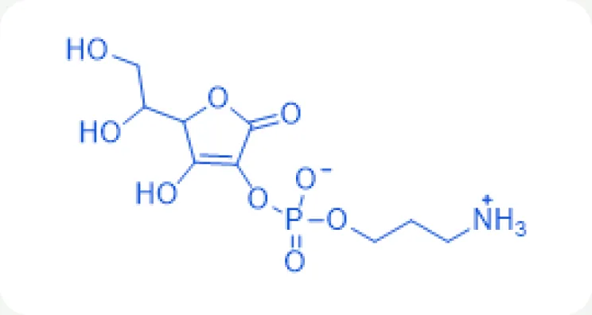
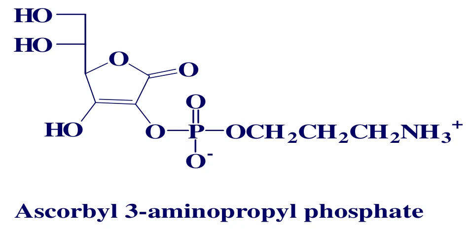
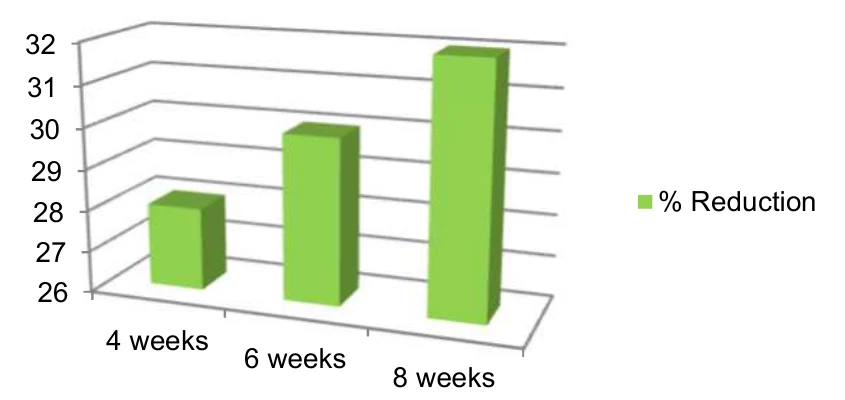
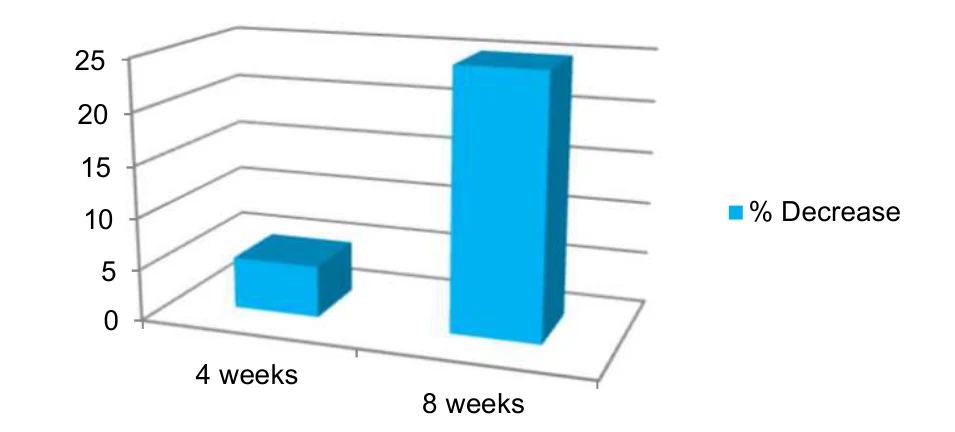
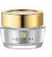
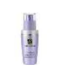
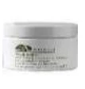
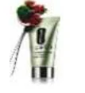

HOME
HOME- 원료소개
- 화장품원료
- Vitagen
Ingredient research
Vitagen
피부 침투력을 높인 비타민 C 유도체
01 / Overview & Strengths
개요 & 특장점
- Vitagen은 비타민 C(Ascorbic acid)와 3-APPA(3-aminopropyl dihydrogen phosphate)를 결합시켜 안정화시킨 비타민 C 유도체입니다.
- 기존 Vitamin C 유도체 대비 강력한 피부 침투력이 장점이며 주름 개선과 미백의 이중 기능성 효과를 가지고 있습니다.
- 기존 비타민 C 유도체와 달리 0.5%부터 효과를 보실 수 있습니다
※ 자세한 자료는 직접 문의 부탁드립니다.
Product features / Product Strengths
- 주름개선 효과
- 미백 효과
- 항산화 효과
- 피부탄력 개선효과

02 / Technical Information
기술 자료
원료 기본 규격 및 제품 카탈로그
- INCI Name
- Aminopropyl Ascorbyl Phosphate
- CAS No.
- 220644-17-7
- M.O.Q.
- 1KG
- Pack Size
- 1KG
- Appearance
- Powder
- Dosage
- 0.5~2%
03 / Research Data
기타 데이터
Introduction
- 안정화된 비타민 C 유도체(Stabilized Vitamin C derivative)입니다.
- 비타민 C(ascorbic acid)와 3-APPA(3-aminopropyl dihydrogen phosphate)를 에스테르화했습니다.
- 주름 개선과 미백의 이중 효과(Dual effect of Anti-wrinkle & Whitening)를 냅니다.

Before
→
After
대상 : 심한 색소 침착(기미, 검버섯, 노인성 반점, 주근깨)이 있는 건강한 여성 33명, 연령 중앙값 34세
시료 : 0.5% Vitagen 로션

사용 8주 후 색소 침착(노인성 반점)이 유의하게 감소했습니다. (감소율 29~33%)

사용 4주 · 8주 후 전체 주름 개수가 크게 줄었습니다.
원료 품질 시험 항목 및 기준
- Appearance
- White to pale yellow powder
- pH (1→100)
- 1.7 ~ 3.7
- Water Soluble
- Up to 20%
- Melting point
- 176 ~ 180℃
- Recommended Dosage
- 0.5 ~ 2%
04 / Applications
적용 및 활용사례
원료의 주요 효능을 바탕으로 살펴보는 적용 검토 방향
-

에스티로더 퓨처 퍼펙트 안티링클 래디언스 크림 Anti-wrinkle -

에스티로더 퍼펙셔니스트 코렉팅 세럼 포 라인즈/링클즈 Anti-wrinkle -

오리진스 유스토피아 스킨 퍼밍 크림 Anti-wrinkle -

크리니크 컨티뉴어스 레스큐 모이스처라이저 Anti-oxidation